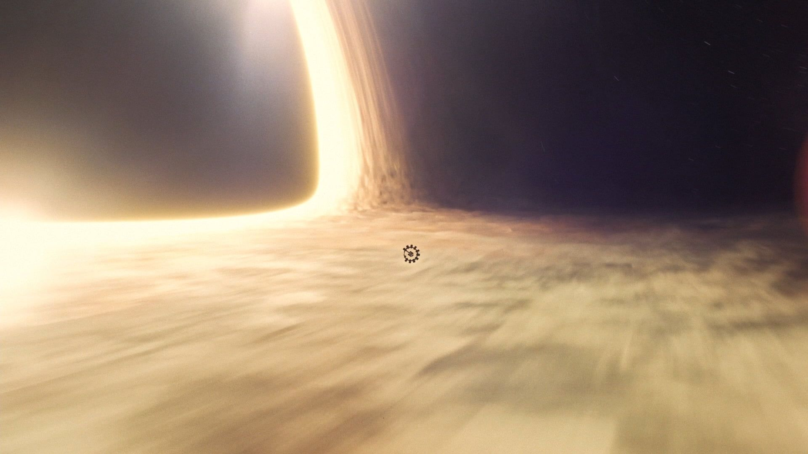
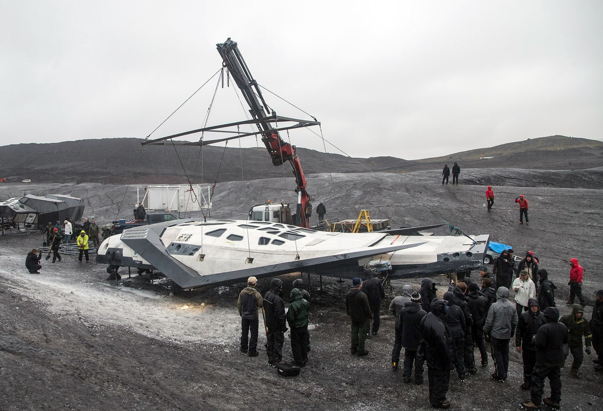
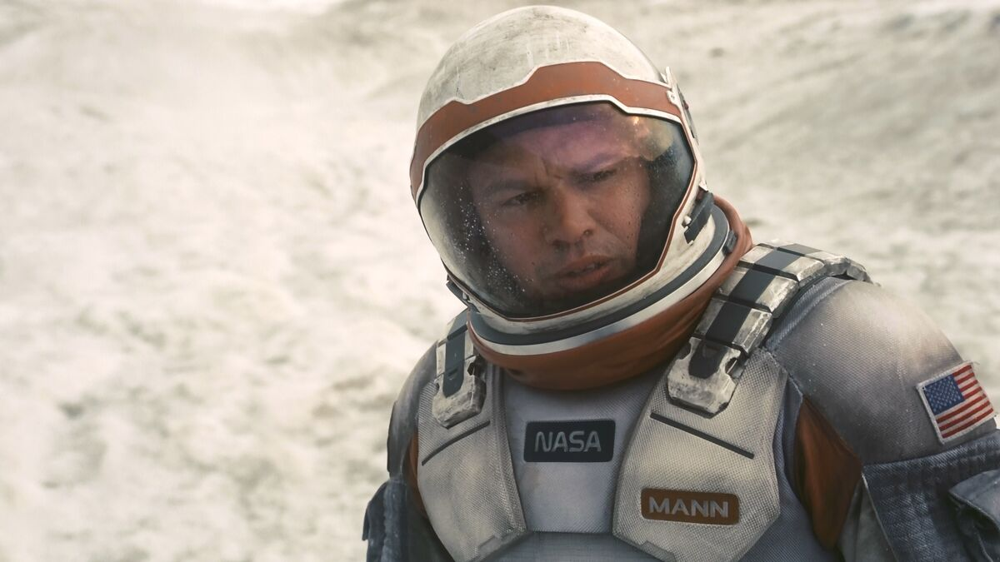
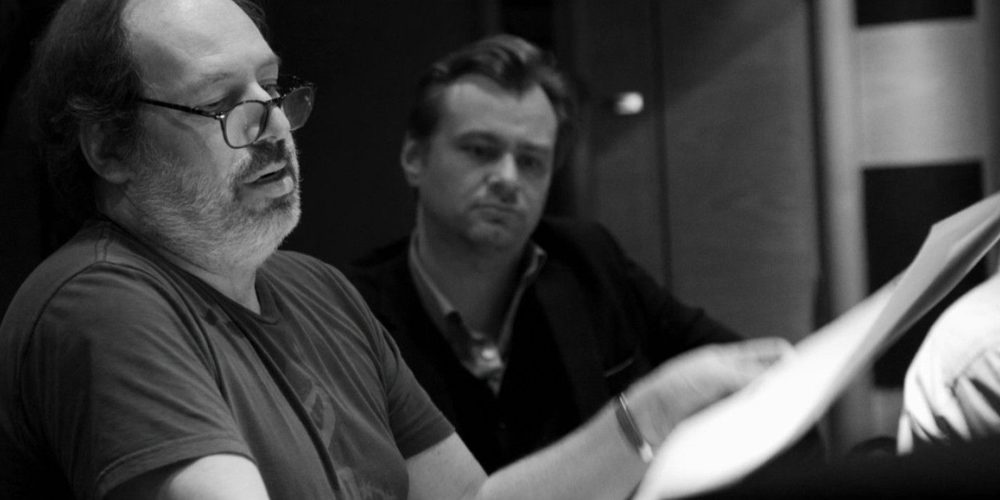

Natáčení na IMAX a 35mm film
Interstellar byl natáčen kombinací analogových IMAX a 35mm kamer, což dává filmu mimořádnou hloubku a ostrost obrazu. Režisér Christopher Nolan tím podtrhl autentický zážitek z vesmíru. IMAX sekvence byly klíčové pro vizuálně bohaté scény planet a vesmíru.
Zdroj: IMAX.com
INTERSTELLAR
Moderní sci-fi snímek, který posunul hranice filmové technologie i vědecké přesnosti. Zde najdete nejzásadnější technické a produkční zajímavosti filmu.


Simulace černé díry Gargantua
Vizuální efekty Interstellaru vznikly za spolupráce s fyzikem Kipem Thornem. Simulace černé díry Gargantua byla natolik vědecky přesná, že inspirovala reálný výzkum v astrofyzice. Efekty získaly Oscara za nejlepší vizuální efekty.
Zdroj: Wired
Vizuální efekty Interstellaru vznikly za spolupráce s fyzikem Kipem Thornem. Simulace černé díry Gargantua byla natolik vědecky přesná, že inspirovala reálný výzkum v astrofyzice. Efekty získaly Oscara za nejlepší vizuální efekty.
Zdroj: Wired

Praktické efekty a modely
Všechny vesmírné lodě (Ranger, Endurance, Lander) byly postaveny jako funkční modely v životní velikosti. Štáb používal hydrauliku, aby simuloval pohyb v beztíže, a herci byli skutečně zavěšeni v kabinách, což přidává autentičnost hereckým výkonům a záběrům.
Zdroj: Space.com
Všechny vesmírné lodě (Ranger, Endurance, Lander) byly postaveny jako funkční modely v životní velikosti. Štáb používal hydrauliku, aby simuloval pohyb v beztíže, a herci byli skutečně zavěšeni v kabinách, což přidává autentičnost hereckým výkonům a záběrům.
Zdroj: Space.com

Režie a štáb
Režisér Christopher Nolan je známý důrazem na vědeckou přesnost i lidské emoce. Produkce zahrnovala špičkové odborníky na vizuální efekty, fyziku, hudbu (Hans Zimmer) a praktické triky. Spolupráce s vědci byla klíčová pro autenticitu děje i vizuální stránku.
Zdroj: Indian Express
Režisér Christopher Nolan je známý důrazem na vědeckou přesnost i lidské emoce. Produkce zahrnovala špičkové odborníky na vizuální efekty, fyziku, hudbu (Hans Zimmer) a praktické triky. Spolupráce s vědci byla klíčová pro autenticitu děje i vizuální stránku.
Zdroj: Indian Express

Hudba Hanse Zimmera
Soundtrack složil Hans Zimmer a je považován za jeden z nejlepších v historii sci-fi. Hudba byla nahrávána na historických varhanách v londýnském chrámu Temple Church, což jí dává unikátní zvuk. Zimmer pracoval přímo s Nolanem a hudba byla často skládána na základě pocitů, které měl režisér během psaní scénáře.
Zdroj: The Guardian
Soundtrack složil Hans Zimmer a je považován za jeden z nejlepších v historii sci-fi. Hudba byla nahrávána na historických varhanách v londýnském chrámu Temple Church, což jí dává unikátní zvuk. Zimmer pracoval přímo s Nolanem a hudba byla často skládána na základě pocitů, které měl režisér během psaní scénáře.
Zdroj: The Guardian